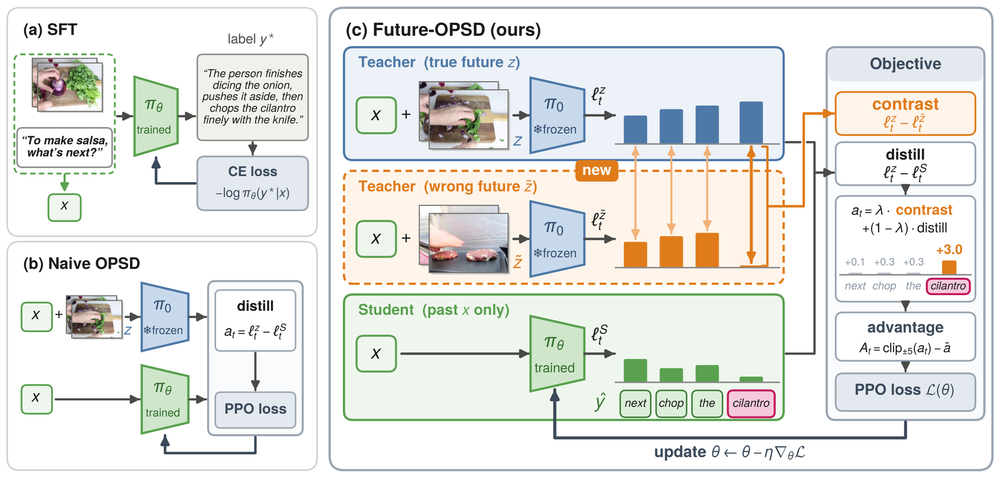
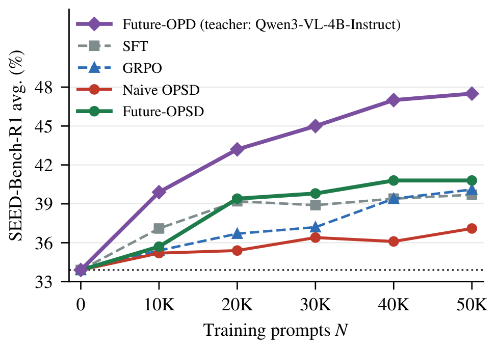
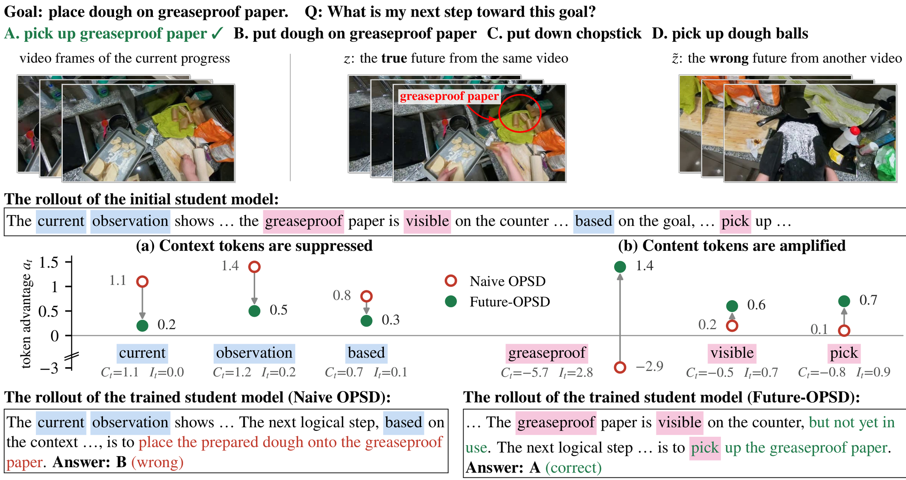

Future-OPSD: Learning Video Foresight Reasoning
from Unlabeled Videos via On-Policy Self-Distillation
Abstract
Video foresight reasoning requires vision-language models to anticipate future events or next actions from currently observed videos. Existing methods fit future captions, rationales, or full visual states, but face two limitations. First, they rely on annotations or external large models for supervision, limiting scalability. We address this with an on-policy self-distillation framework that turns past–future video pairs into a natural self-supervised signal without extra annotations or LLM supervision. Second, they treat the whole future clip as equally valuable, although most of it is irrelevant context information. We address this by defining a foresight score, from which we obtain a contrastive privilege advantage that drives the model to learn the most valuable future information. Since the score is intractable, we optimize a tractable lower-bound surrogate that interpolates this advantage, computed between the true and a random reference future, with a teacher–student distillation advantage; together, they amplify decision-relevant content information and suppress irrelevant context information. We call the resulting framework Future-OPSD. On open-ended prediction and closed-ended planning, Future-OPSD improves base models by up to 14.2 and 15.9 points without compromising general video understanding.
Highlights
No labels, no LLM judges
Past–future video pairs become self-supervision. A frozen copy of the student that also sees the true future scores every token the student writes.
Learn what matters
A foresight score and its provable lower bound contrast the true future with a random one. Content tokens are amplified and context tokens suppressed.
Strong gains
Up to +14.2 on open-ended prediction and +15.9 on closed-ended planning, with general video understanding preserved.
Method

Overview of Future-OPSD. (a) SFT fits annotated future descriptions with cross-entropy. (b) Naive OPSD lets a frozen, future-aware teacher score the student’s own response and turns the teacher–student gap into token advantages for PPO. (c) Future-OPSD scores the same response under the true future \(z\) and a reference future \(\tilde z\) from another video. Mixing the contrast with distillation down-weights context tokens supported by both futures (next / chop / the) and keeps content tokens specific to the true future (cilantro). Inference uses only the student.
Setup. Each video is split into past frames plus a question \(x\) and its paired future clip \(z\). The student \(\pi_\theta\) sees only \(x\) and writes a reasoning-and-answer response \(y\). A frozen copy of the initial student, \(\pi_0\), also sees \(z\) and scores that response. No answer or rationale labels are needed, and inference uses only the student.
Foresight score. Inspired by InfoNCE, we measure how specifically the true future supports a response by comparing its teacher probability with the average over reference futures \(\tilde z\) drawn from other videos:
$$\Phi(\theta) = \mathbb{E}_{(x,z)\sim p,\; y\sim\pi_\theta(\cdot\mid x)}\left[\log \frac{\pi_0(y \mid x, z)}{\mathbb{E}_{\tilde z\sim p_Z}\,\pi_0(y \mid x, \tilde z)}\right].$$We show that \(\Phi(\theta) = I(X;Z) - D(\theta) \le I(X;Z)\), so maximizing the score aligns the teacher-defined verifier with the true distribution of futures.
Tractable lower bound. The normalizer in \(\Phi\) is intractable. We instead contrast the teacher’s scores of the same response under the true and a reference future, which decomposes over tokens. A KL penalty toward the future-aware teacher controls the gap to \(\Phi\):
$$\mathcal{L}(\theta) = \mathbb{E}\big[\log \pi_0(y\mid x,z) - \log \pi_0(y\mid x,\tilde z)\big],$$ $$J_\lambda(\theta) = \lambda\,\mathcal{L}(\theta) \;-\; (1-\lambda)\,\mathbb{E}\,D_{\mathrm{KL}}\big(\pi_\theta(\cdot\mid x)\,\|\,\pi_0(\cdot\mid x,z)\big).$$For \(0 < \lambda < 1\), maximizing \(J_\lambda\) maximizes a lower bound on the foresight score: \(\Phi(\theta) \ge J_\lambda(\theta)/\lambda - C_\beta\) with \(\beta = \lambda/(1-\lambda)\).
Token-level update. Each token receives an immediate advantage that mixes a contrastive privilege term with a teacher–student distillation term. Advantages are clipped, centered and optimized with PPO:
$$a_t = \lambda\,\underbrace{\big(\ell^{z}_t - \ell^{\tilde z}_t\big)}_{\text{contrastive privilege}} \;+\; (1-\lambda)\,\underbrace{\big(\ell^{z}_t - \ell^{S}_t\big)}_{\text{teacher–student distillation}}.$$Experimental Results
Students are Qwen3-VL-8B-Instruct and Qwen3.5-9B. Open-ended prediction trains on Future-L1 and evaluates on TwiFF-Bench. Closed-ended planning trains on EgoPlan-IT and evaluates on SEED-Bench-R1. All models are also tested on four general video benchmarks: TempCompass (Temp.), TemporalBench (T-B.), Video-MME (V-M.) and MVBench (MVB).
Open-ended prediction (trained on Future-L1)
| Model | Method | Labels | TwiFF-Bench | SEED-Bench-R1 | General Video Understanding | ||||||||
|---|---|---|---|---|---|---|---|---|---|---|---|---|---|
| CoT | Ans. | Avg | L1 | L2 | L3 | Temp. | T-B. | V-M. | MVB | Avg | |||
| Qwen3-VL-8B | Base | – | 58.6 | 48.7 | 53.6 | 45.4 | 47.5 | 39.7 | 78.3 | 18.6 | 61.7 | 65.5 | 56.0 |
| SFT | ✓ | 61.3 | 55.7 | 58.5 | 33.8 | 35.1 | 33.4 | 71.8 | 16.3 | 54.1 | 57.0 | 49.8 | |
| Naive OPSD | – | 66.0 | 56.4 | 61.2 | 45.9 | 47.3 | 38.7 | 79.0 | 20.9 | 62.0 | 66.2 | 57.0 | |
| Future-OPSD | – | 71.9 | 63.5 | 67.8 | 46.1 | 48.3 | 40.0 | 79.6 | 20.4 | 63.0 | 67.0 | 57.5 | |
| Δ vs. Base | +13.3 | +14.8 | +14.2 | +0.7 | +0.8 | +0.3 | +1.3 | +1.8 | +1.3 | +1.5 | +1.5 | ||
| Qwen3.5-9B | Base | – | 62.4 | 54.5 | 58.5 | 44.3 | 44.9 | 37.9 | 79.9 | 21.4 | 61.2 | 65.6 | 57.0 |
| SFT | ✓ | 63.5 | 57.4 | 60.5 | 36.4 | 37.6 | 31.3 | 73.7 | 19.4 | 56.4 | 48.2 | 49.4 | |
| Naive OPSD | – | 66.2 | 59.1 | 62.7 | 43.3 | 42.4 | 35.2 | 79.9 | 21.4 | 60.7 | 65.0 | 56.7 | |
| Future-OPSD | – | 70.4 | 66.1 | 68.2 | 45.4 | 47.1 | 38.0 | 79.3 | 21.5 | 63.1 | 65.9 | 57.2 | |
| Δ vs. Base | +8.0 | +11.6 | +9.7 | +1.1 | +2.2 | +0.1 | −0.6 | +0.1 | +1.9 | +0.3 | +0.2 | ||
In-domain evaluation. Bold marks the best score in each column for each model. Future-OPSD improves in-domain performance by up to 14.2 points without any answer labels, while general video understanding is preserved.
Closed-ended planning (trained on EgoPlan-IT)
| Model | Method | Labels | SEED-Bench-R1 | TwiFF-Bench | General Video Understanding | ||||||||
|---|---|---|---|---|---|---|---|---|---|---|---|---|---|
| L1 | L2 | L3 | CoT | Ans. | Avg | Temp. | T-B. | V-M. | MVB | Avg | |||
| Qwen3-VL-8B | Base | – | 45.4 | 47.5 | 39.7 | 58.6 | 48.7 | 53.6 | 78.3 | 18.6 | 61.7 | 65.5 | 56.0 |
| SFT | ✓ | 47.4 | 48.6 | 42.9 | 50.0 | 45.7 | 47.8 | 66.9 | 16.3 | 55.4 | 55.4 | 48.5 | |
| TTRL | – | 45.8 | 50.3 | 42.9 | 60.7 | 50.1 | 55.4 | 78.9 | 19.8 | 61.5 | 66.7 | 56.7 | |
| Naive OPSD | – | 50.1 | 51.7 | 44.9 | 60.9 | 47.7 | 54.3 | 78.6 | 20.1 | 61.3 | 65.7 | 56.4 | |
| Future-OPSD | – | 54.3 | 55.8 | 50.6 | 63.8 | 53.1 | 58.5 | 78.8 | 19.3 | 62.7 | 65.1 | 56.5 | |
| Δ vs. Base | +8.9 | +8.3 | +10.9 | +5.2 | +4.4 | +4.9 | +0.5 | +0.7 | +1.0 | −0.4 | +0.5 | ||
| Qwen3.5-9B | Base | – | 44.3 | 44.9 | 37.9 | 62.4 | 54.5 | 58.5 | 79.9 | 21.4 | 61.2 | 65.6 | 57.0 |
| SFT | ✓ | 47.5 | 50.1 | 44.9 | 53.1 | 48.1 | 50.6 | 73.5 | 17.4 | 57.0 | 57.2 | 51.3 | |
| TTRL | – | 27.3 | 29.7 | 26.4 | 53.9 | 54.6 | 54.2 | 75.7 | 20.3 | 56.0 | 61.0 | 53.3 | |
| Naive OPSD | – | 48.2 | 49.9 | 40.7 | 58.5 | 53.1 | 55.8 | 79.2 | 21.7 | 59.4 | 64.6 | 56.2 | |
| Future-OPSD | – | 58.4 | 59.7 | 53.8 | 63.7 | 57.9 | 60.8 | 81.4 | 21.9 | 61.2 | 65.0 | 57.4 | |
| Δ vs. Base | +14.1 | +14.8 | +15.9 | +1.3 | +3.4 | +2.3 | +1.5 | +0.5 | 0.0 | −0.6 | +0.4 | ||
In-domain evaluation. Bold marks the best score in each column for each model. Future-OPSD improves in-domain planning by up to 15.9 points and also transfers to open-ended prediction on TwiFF-Bench.

More data and stronger teachers help. Qwen3-VL-2B is trained on up to 50K EgoPlan-IT prompts. Future-OPSD scales better than Naive OPSD and, without answer labels, overtakes SFT and GRPO at larger data scales. A stronger frozen teacher (Qwen3-VL-4B-Instruct, Future-OPD) brings further, more sustained gains.
How Does Future-OPSD Work?

Context is suppressed, content is amplified. On an EgoPlan-IT example with Qwen3-VL-8B, a frozen teacher scores the same initial rollout under the true future \(z\) and a wrong future \(\tilde z\) from another video. Naive OPSD rewards generic context tokens such as current and observation and penalizes the decision-relevant token greaseproof. Future-OPSD reverses this. After training, it correctly predicts picking up the greaseproof paper (A), while Naive OPSD jumps ahead to placing the dough on it (B).